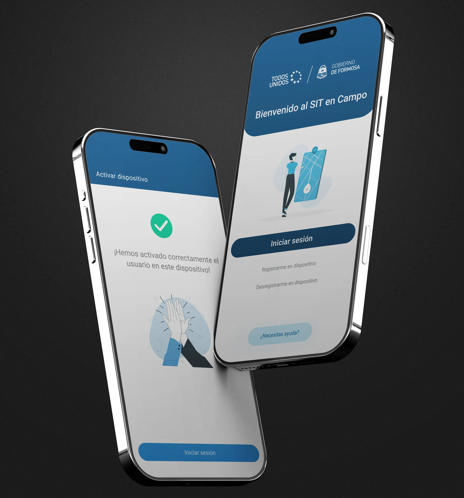
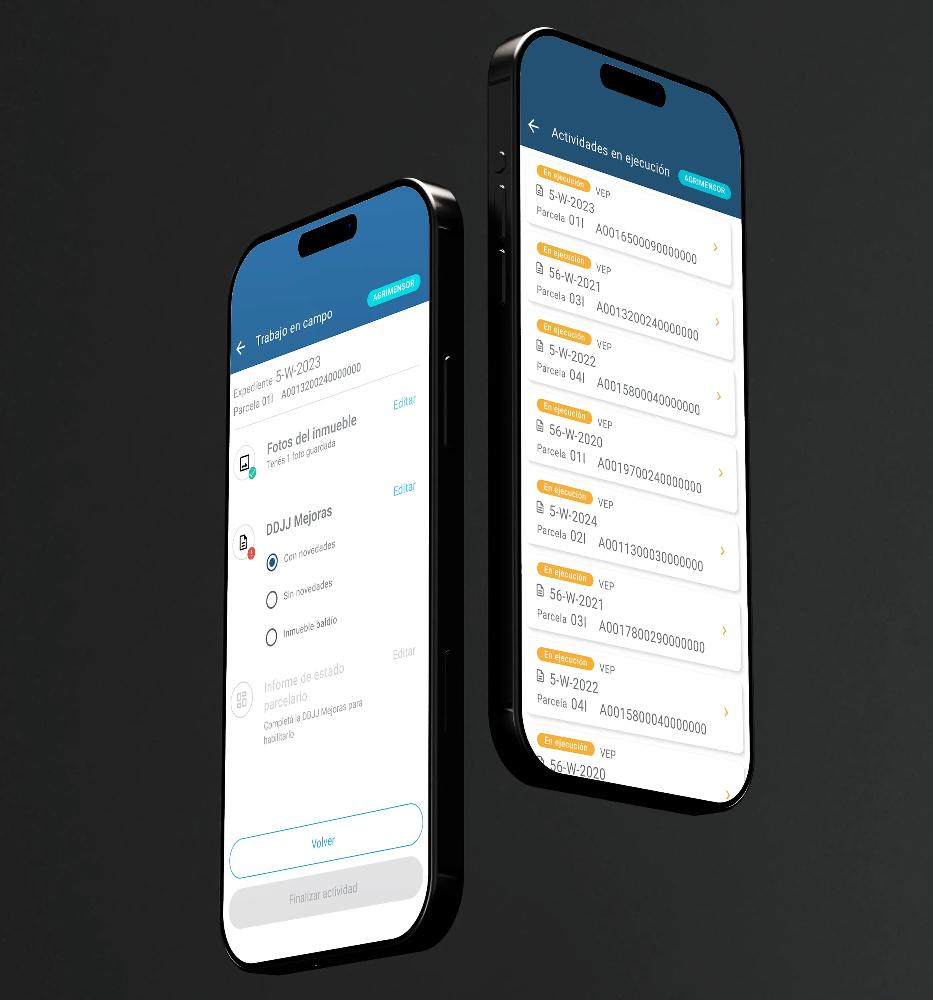
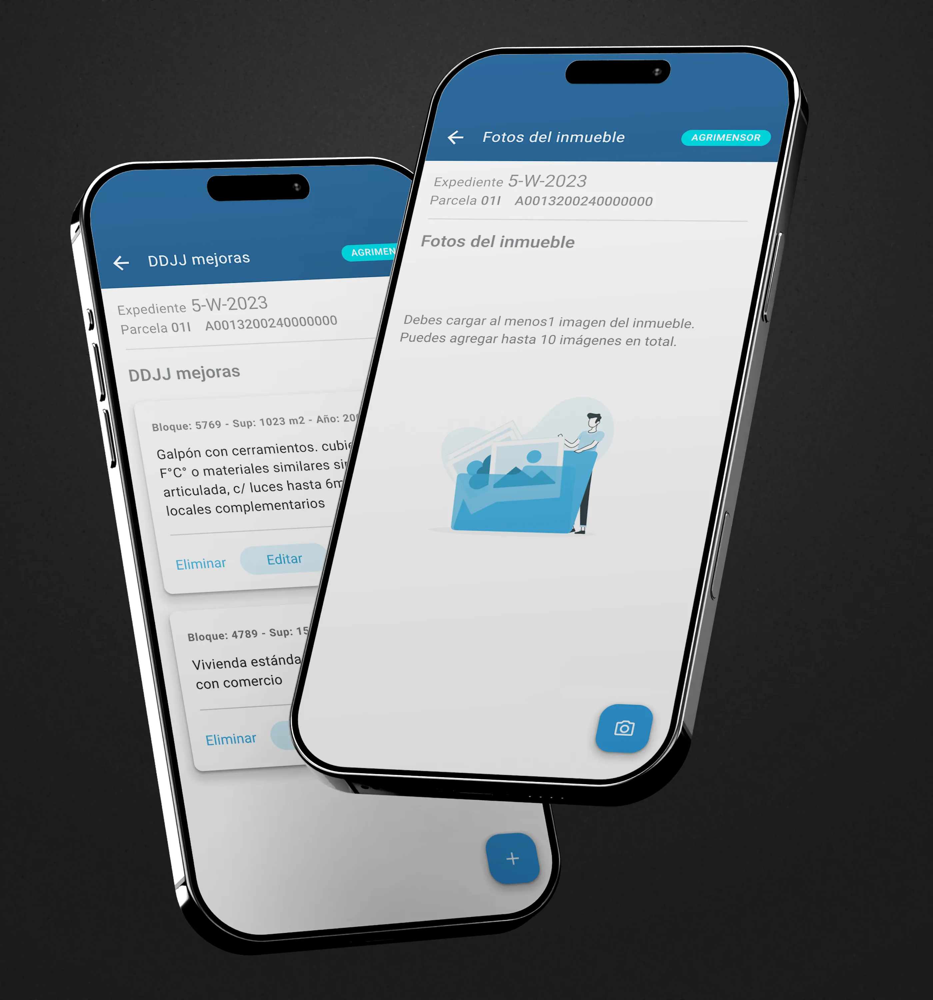
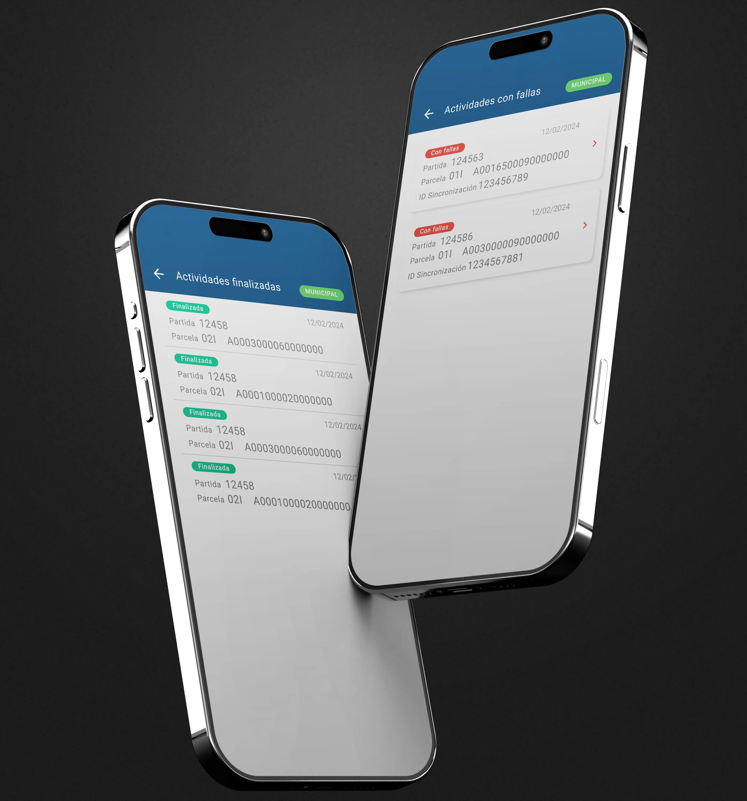
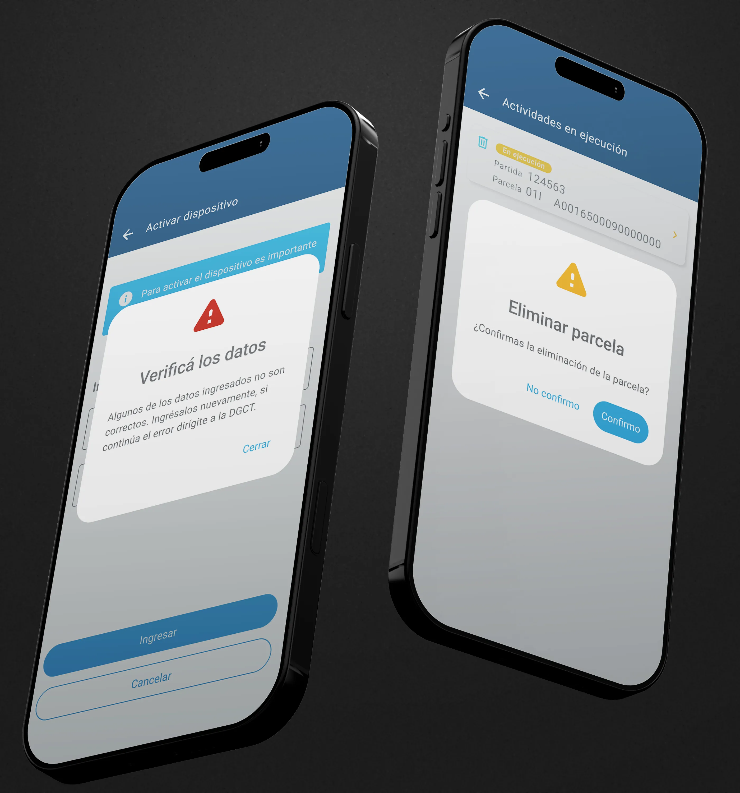
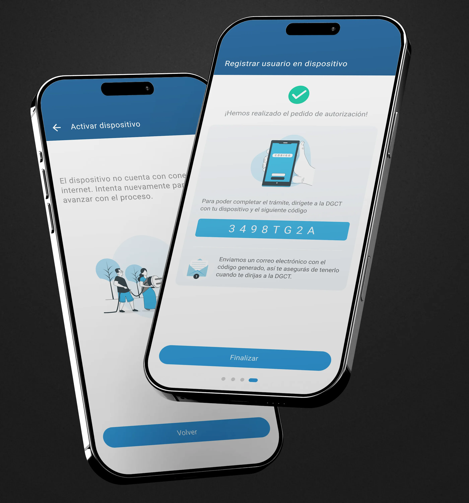
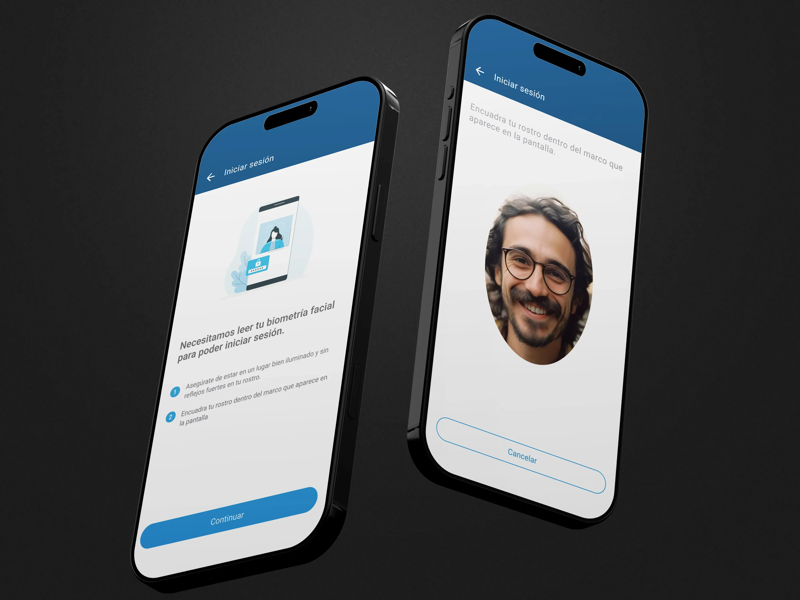
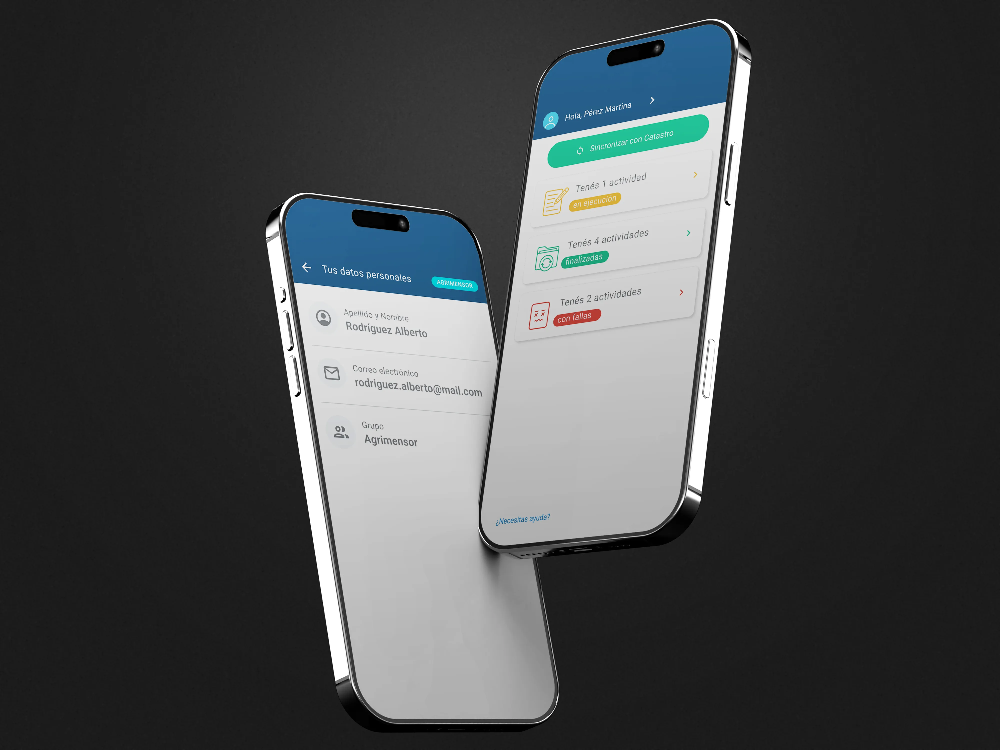

App Formosa V2
El proyecto
El Gobierno de la Provincia de Formosa necesitaba modernizar el proceso de relevamiento catastral de propiedades. El sistema existente era de escritorio y obligaba a los agrimensores a volver a la oficina para cargar datos levantados en campo. La nueva versión debía funcionar desde el dispositivo móvil del agrimensor y del inspector municipal, con capacidad de operar sin conexión y sincronizar con el sistema central cuando hubiera red disponible. El diseño siguió los lineamientos de Material Design 3 y se documentó en un design system en Figma que centralizó componentes, tokens y estados para garantizar consistencia en las 126 pantallas.


El desafío
La app debía servir a dos perfiles de usuario con necesidades distintas —agrimensores que trabajan en campo bajo el sol y con guantes, e inspectores municipales que operan desde oficina— sobre el mismo sistema de datos catastral. Los puntos críticos: autenticación robusta sin fricción en condiciones de campo, flujo de trabajo completo sin perder datos, y un proceso de registro de dispositivo con intervención presencial que el diseño tenía que anticipar antes de que el usuario llegara sin saberlo.


Decisiones de diseño
Biometría facial en lugar de huella dactilar
Los agrimensores trabajan con las manos en condiciones que inutilizan el sensor de huella. El reconocimiento facial es más confiable en campo. Requirió diseñar una pantalla de captura con instrucciones claras de distancia y luz.
Resultado · Autenticación funcional en condiciones de campo sin necesidad de quitarse los guantes.
Flujo de campo como checklist progresivo
En lugar de un formulario único, el flujo se organizó en tres secciones con estado visible: fotos del inmueble, DDJJ Mejoras, Informe de estado parcelario. Cada sección muestra si está completa, pendiente o con error. El botón "Finalizar actividad" permanece deshabilitado hasta completar las secciones obligatorias.
Resultado · Cero actividades enviadas con datos incompletos — el botón no habilita hasta completar las secciones obligatorias.
Sistema de errores en tres niveles
Modales para errores bloqueantes que requieren decisión, banners informativos para avisos de contexto, y estados inline para errores de campo. Esto redujo las interrupciones en los flujos principales.
Resultado · Menos interrupciones en los flujos críticos de campo — solo los errores bloqueantes detienen al usuario.
Diferenciación visual por rol
Agrimensor y Municipal comparten la misma base de componentes, diferenciados con un badge de rol en el header — cyan para agrimensor, verde para municipal — visible en todas las pantallas de sesión activa.
Resultado · Diferenciación de rol visible en todo momento — sin riesgo de confusión entre perfiles.




El resultado
126 pantallas de alta fidelidad.
Flujos completos para ambos roles, todos los estados de error posibles, y el proceso completo de
registro, activación y desregistro de dispositivo.
El prototipo fue usado directamente como referencia de desarrollo por el equipo técnico de Igeo
Consultora — sin iteraciones adicionales de especificación. Hoy está implementado en el
sistema catastral de la provincia de Formosa.
Lo que aprendí
Diseñar para trabajo de campo impone restricciones que el diseño de escritorio ignora: guantes, sol, conexión intermitente, presión de tiempo. Cada decisión de interacción —tamaño de toque, número de pasos, claridad del estado— tiene consecuencias reales cuando el usuario está parado en el medio de un lote en Formosa a 40 grados. Ese contexto físico fue el criterio de validación de cada pantalla.